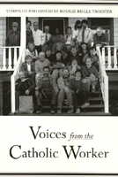

<body bgcolor="#FFFFFF" text="#000000" link="#0000FF" vlink="#CC0000" alink="#CC0000"><center><hr width="350" size="1" align="center" noshade>Reflections on the past and future of a long-standing community<hr width="350" size="1" align="center" noshade><p><a href="https://cdcshoppingcart.uchicago.edu/Cart/ChicagoBook.aspx?ISBN=9781566390583&&PRESS=temple" target="_top">Buy this book!</a> | <a href="https://cdcshoppingcart.uchicago.edu/Cart/Cart.aspx?PRESS=temple" target="_top">View Cart</a> | <a href="https://cdcshoppingcart.uchicago.edu/Cart/Cart.aspx?PRESS=temple" target="_top">Check Out</a></p><p></p></center><!--none//--><h1>Voices from the Catholic Worker</h1>
<h3>edited by Rosalie Riegle Troester</h3>
<P>cloth 1-56639-058-3 $74.50, Sep 93, <FONT COLOR=#990033>Out of Stock Unavailable</FONT>
<br>paper 1-56639-059-1 $40.95, Sep 93, <FONT COLOR=#990033>Available</FONT>
<BR> 632 pp
6x9
22&nbsp;halftones
</P><BLOCKQUOTE><I>"This book is even more essential now than when these voices were first heard. It deals with a movement that is so much a symbol of American hope that it's in a class by itself. I strongly recommend Voices from the Catholic Worker."</I>
<br>&#151<b>Studs Terkel</b><I></I></BLOCKQUOTE>
<p>This rich oral history weaves a tapestry of memories and experience from interviews, roundtable discussions, personal memoirs, and thorough research. In the sixtieth anniversary year of the Catholic Worker, Rosalie Riegle Troester reconfirms the diversity and commitment of a movement that applies basic Christianity to social problems.
<p>Founded in 1933 by Dorothy Day and Peter Maurin, the Catholic Worker has continued to apply the principles of voluntary poverty and nonviolence to changing social and political realities. Over 200 interviews with Workers from all over the United States reveal how people came to this movement, how they were changed by it, and how they faced contradictions between the Catholic Worker philosophy and the call of contemporary life.
<p>Vivid memoirs of Dorothy Day, Peter Maurin, and Ammon Hennacy are interwoven with accounts of involvement with labor unions, war resistance, and life on Catholic Worker farms. The author also addresses the Worker's relationship with the Catholic Church and with the movement's wrenching debates over abortion, homosexuality, and the role of women.
<BR>&nbsp;<h2>Contents</h2><P>
<p>Acknowledgments
<br>Introductory Notes
<p><b>Part I: History</b>
<p>1. In the Beginning Was
<br><I>Joe Zarrella &#149
Alice Zarrella &#149
John Cort &#149
Justine Murphy &#149
Nina Polcyn Moore &#149
Florence Weinfurter &#149
Sr. Ruth Heaney &#149
Dorothy Gauchat &#149
Julian Pleasants &#149
Mary Jane Pleasants &#149
Dr. Arthur Falls &#149
Ed Marciniak &#149
Jim O�Gara &#149
Joan O�Gara &#149
Tom Cornell &#149
Jim Forest &#149
Bill Griffin &#149
Tom Lewis &#149
Willa Bickham &#149
Daniel Marshall &#149
John Cooper &#149
Barbara Blaine &#149
Catherine Morris</I>
<p>2. The Word
<br><I>Ade Bethune &#149
Joe Zarrella &#149
Alice Zarrella &#149
Jeannette Noel &#149
Tom Cornell &#149
Pat Jordan &#149
Jim Forest &#149
Gary Donatelli &#149
Peggy Scherer &#149
Brian Terrell &#149
Jane Sammon &#149
Jeff Dietrich &#149
Patty Burns &#149
Scott Schaeffer-Duffy &#149
Mary Kay Meyer</I>
<p>3. Memories of Dorothy Day
<br><I>Joe Zarrella &#149
Alice Zarrella &#149
Jane Sammon &#149
Ade Bethune &#149
John Cort &#149
Michael Harrington &#149
Bob Tavani &#149
Tom Cornell &#149
Jim Forest &#149
Jim O�Gara &#149
Brian Terrell &#149
Judith Malina &#149
Fr. Richard McSorley &#149
Terry Rogers &#149
Mary Lathrop &#149
Catherine Morris &#149
Chris Delany &#149
Dan Delany &#149
Jim Eder &#149
Kathe McKenna &#149
Kathleen Jordan &#149
Pat Jordan &#149
Robert Ellsberg</I>
<p>4. Memories of Peter Maurin
<br><I>Mike Garvey &#149
Joe Zarrella &#149
Alice Zarrella &#149
Michael Harrington &#149
John Cort &#149
Jim O�Gara &#149
Brian Terrell &#149
Gary Donatelli &#149
Chris Montesano &#149
Daniel Marshall &#149
Sr. Ruth Heaney</I>
<p>5. Memories of Ammon Hennacy
<br><I>Florence Weinfurter &#149
Pat Murray &#149
Mary Murray &#149
Fr. Bernie Gilgun &#149
Julian Pleasants &#149
Michael Harrington &#149
Mike Garvey &#149
Tom Cornell &#149
Mary Lathrop &#149
Pat Coy &#149
Utah Phillips</I>
<p>6. The Ideals of One�s Youth: Michael Harrington
<p>An Interlude: Singing Old Songs
<p><b>Part II: The Work</b>
<p>7. Coming and Becoming: Stories of Conversion
<br><I>Richard Cleaver &#149
Gary Donatelli &#149
Brian Terrell &#149
Marc Ellis &#149
Tom Cornell &#149
Kathleen Jordan &#149
Pat Jordan &#149
Teka Childress &#149
Don Timmerman &#149
Robert Ellsberg &#149
Lynn Lassalle-Klein &#149
Jim Levinson &#149
Jonathan Kirkendall &#149
Bob Imholt &#149
Linda Greenwald &#149
Chris Montesano &#149
Donna Domiziano &#149
Fr. Bernie Gilgun &#149
Patty Burns &#149
Claire Schaeffer-Duffy &#149
Gayle Catinella</I>
<p>8. Hospitality: A Roundtable Discussion
<br><I>John Williams &#149
Fr. Richard McSorley &#149
Brian Terrell &#149
Betsy Keenan &#149
Kassie Temple &#149
Barbara Blaine &#149
Bob Tavani &#149
Jeff Dietrich &#149
Catherine Morris &#149
Fr. Jack Keehan &#149
Kathe McKenna &#149
Frank Walsh &#149
Kathy Shuh-Ries &#149
John Cooper &#149
Debbie McQuade &#149
Gayle Catinella &#149
Jeannette Noel &#149
John Mahoney &#149
Donna Domiziano &#149
Charles Walzem &#149
Tom Cornell &#149
Dennis Coday &#149
Margaret Quigley Garvey &#149
Gary Donatelli &#149
Richard Cleaver &#149
Mary Kay Meyer &#149
Larry Ray-Keil &#149
Teka Childress &#149
Jonathan Kirkendall</I>
<p>9. Protest and Resistance: A Roundtable Discussion
<br><I>Karl Meyer &#149
Chuck Quilty &#149
Pat Coy &#149
Sr. Anna Koop &#149
Jane Sammon &#149
Brian Terrell &#149
Betsy Keenan &#149
Sue Frankel-Streit &#149
Mary Aileen Schmeil &#149
Willa Bickham &#149
Steve Soucy &#149
Sr. Char Madigan &#149
Mary West &#149
Jim Forest &#149
Tina Sipula &#149
Chuck Trapkus &#149
Fr. Tom Lumpkin &#149
Scott Schaeffer-Duffy &#149
Jeff Dietrich &#149
Paul Magno &#149
Marcia Timmel &#149
Darla Bradley &#149
Tom Lewis</I>
<p>10. Paper Cranes and Fighter Planes: Kathleen Rumpf of Syracuse, New York
<p>11. Workers Who Are Scholars
<br><I>Meg Hyre &#149
Angela Jones &#149
Mark White &#149
Chris Montesano &#149
Catherine Morris &#149
Pat Jordan &#149
Eileen Egan &#149
John Cooper &#149
Fr. Tom Lumpkin &#149
Jane Sammon &#149
Jerry Ebner &#149
Tina Sipula &#149
Jim Forest</I>
<p>12. Harvest of Dreams: Catholic Worker Farms: A Roundtable Discussion
<br><I>Jim Eder &#149
Bob Tavani &#149
Chris Shepherd &#149
Ed Forand &#149
Chris Montesano &#149
Sr. Anna Koop &#149
Brian Terrell &#149
Betsy Keenan &#149
Jim Levinson &#149
Gayle Catinella &#149
Jim O�Gara</I>
<p>13. The Mother House, New York
<br><I>Jane Sammon &#149
Ed Forand &#149
Gary Donatelli &#149
Tom Cornell &#149
Jo Roberts</I>
<p><b>Part III: Living Together</b>
<p>14. Community: A Roundtable Discussion
<br><I>Tina Sipula &#149
Darla Bradley &#149
Fr. Jack Keehan &#149
Pat Jordan &#149
Jim Eder &#149
Gary Donatelli &#149
Jim Kelly &#149
Chuck Matthei &#149
Kathe McKenna &#149
Catherine Morris &#149
Charles Walzem &#149
Brian Terrell &#149
Jane Emerson &#149
Don Timmerman &#149
Sue Frankel-Streit &#149
Ed Forand &#149
Bill Griffin &#149
Chris Montesano &#149
Joan Montesano &#149
Teka Childress &#149
Pat Coy &#149
Larry Purcell &#149
Dick Dieter &#149
Maggie Louden &#149
Joe Zarrella &#149
Fr. Richard McSorley &#149
Jeff Dietrich &#149
Karl Meyer</I>
<p>15. Families in the Worker
<br><I>Marcia Timmel &#149
Paul Magno &#149
Terry Bennett-Cauchon &#149
Lynn Lassalle-Klein &#149
Bob Lassalle-Klein &#149
Justine Murphy &#149
Monica Cornell &#149
Tom Cornell &#149
Pat Jordan &#149
Kathleen Jordan &#149
Kathy Shuh-Ries &#149
Patti McKee &#149
Jim Levinson &#149
Louise Cochran &#149
David Specht &#149
Claire Pearson &#149
Claire Schaeffer-Duffy &#149
Scott Schaeffer-Duffy &#149
Chuck Quilty &#149
Tom Lewis &#149
Chris Montesano &#149
Joan Montesano</I>
<p>16. Catholic Worker Kids
<br><I>Kate Walsh &#149
Kenna Lee Meyer &#149
Becky Delany &#149
Joachim Zwick &#149
Chris Shepherd</I>
<p>Illustrations
<p><b>Part IV: Doing the Work</b>
<p>17. Miracles at Martin�s: Martin de Porres in San Francisco
<br><I>Carole Arett &#149
Charlie</I>
<p>18. Snapshots: Larry Purcell of Redwood City, California
<p>19. The Logic of Grace: Davenport, Iowa
<br><I>Mike Garvey &#149
Margaret Quigley &#149
Garvey Bob Chaps</I>
<p>20. A Family Affair: The Cordaros of Des Moines
<br><I>Angela Cordaro &#149
Fr. Frank Cordaro &#149
Tom Cordaro</I>
<p>21. Inner City Solitude: Virginia Druhe of St. Louis
<p>22. Uptown: St. Francis of Assisi in Chicago
<br><I>Fr. Jack Keehan &#149
Jim Eder &#149
Denise Plunkett &#149
Mark Miller</I>
<p>23. Light and Shadow: David Stein of Chicago
<p>24. Laughter and Learning: Angelus House in Toronto
<br><I>Charlie Angus &#149
Lauren Griffin</I>
<p>25. Unity and Diversity: Syracuse Communities
<br><I>Dorothy Day House &#149
Unity Kitchen &#149
Unity Acres in Orwell</I>
<p>26. Across the Country
<br><I>San Jose, California &#149
Las Vegas, Nevada &#149
Orange County, California &#149
Waterbury, Connecticut &#149
Chicago, Illinois: St. Catherine of Genoa &#149
Washington, D.C. &#149
Alderson, West Virginia &#149
Phoenix, Arizona &#149
Houston, Texas &#149
Bloomington, Illinois &#149
Boston, Massachusetts</I>
<p>An Interlude: Spinning a Web
<p><b>Part V: The <I>Catholic</I> Worker</b>
<p>27. Spirituality: A Roundtable Discussion
<br><I>Jim Forest &#149
Fr. Mike Baxter &#149
Larry Ray-Keil &#149
Louise Cochran &#149
Fr. Tom Lumpkin</I>
<p>28. The Worker and the Church: A Roundtable Discussion
<br><I>Fr. Frank Cordaro &#149
Gary Donatelli &#149
Bill Griffin &#149
Steve Soucy &#149
Pat Coy &#149
Marc Ellis &#149
Kassie Temple &#149
Eileen Egan &#149
Fr. Richard McSorley &#149
Chris Delany &#149
Margaret Quigley Garvey &#149
Mike Garvey</I>
<p>29. The Controversy over Homosexuality
<br><I>Chris Montesano &#149
Gary Donatelli &#149
Peggy Scherer &#149
Bill Griffin &#149
David Buer &#149
Jonathan Kirkendall &#149
Larry Ray-Keil &#149
Richard Cleaver &#149
Gary Olivero &#149
Barbara Blaine &#149
Fr. Bernie Gilgun</I>
<p>30. Abortion
<br><I>Marcia Timmel &#149
Fr. Frank Cordaro &#149
Sr. Char Madigan &#149
Sr. Anna Koop</I>
<p>31. Feminism, the Worker, and the Church: A Roundtable Discussion
<br><I>Sr. Char Madigan &#149
Joan Montesano &#149
Maggie Louden &#149
Ellen Rehg &#149
Darla Bradley &#149
Claire Schaeffer-Duffy &#149
Sr. Anna Koop &#149
Gary Olivero &#149
Barbara Blaine &#149
Terry Bennett-Cauchon &#149
Tina Sipula</I>
<p>Epilogue
<br>Appendix A: Persons Interviewed
<br>Appendix B: Houses of Hospitality
<br>Appendix C: 1992 Aims and Means of the Catholic Worker Movement
<br>Select Bibliography
<br>Index
</P><BR>&nbsp;<H2>About the Author(s)</H2>
<P><b>Rosalie Riegle Troester</b> is Professor of English at Saginaw Valley State University in Michigan.</P>
<BR><H2>Subject Categories</H2>
<p><A HREF="/tempress/religion.html" TARGET="_top">Religion</a>
<BR>
</p>
<p align="center"><a href="https://cdcshoppingcart.uchicago.edu/Cart/ChicagoBook.aspx?ISBN=9781566390583&&PRESS=temple" target="_top">Buy this book!</a> | <a href="https://cdcshoppingcart.uchicago.edu/Cart/Cart.aspx?PRESS=temple" target="_top">View Cart</a> | <a href="https://cdcshoppingcart.uchicago.edu/Cart/Cart.aspx?PRESS=temple" target="_top">Check Out</a></p><p><font face="Arial" size="1"><a href="copyright.html" onMouseOver="window.status='Web Copyright Policy';return true;" onMouseOut="window.status=''" title="Web Copyright Policy">&copy;</a> 2015 <a href="http://www.temple.edu" target="new" onMouseOver="window.status='Link to Temple University home page';return true;" onMouseOut="window.status=''" title="Link to Temple University home page">Temple University</a>. All Rights Reserved. http://www.temple.edu/tempress/titles/961_reg.html</font></p>